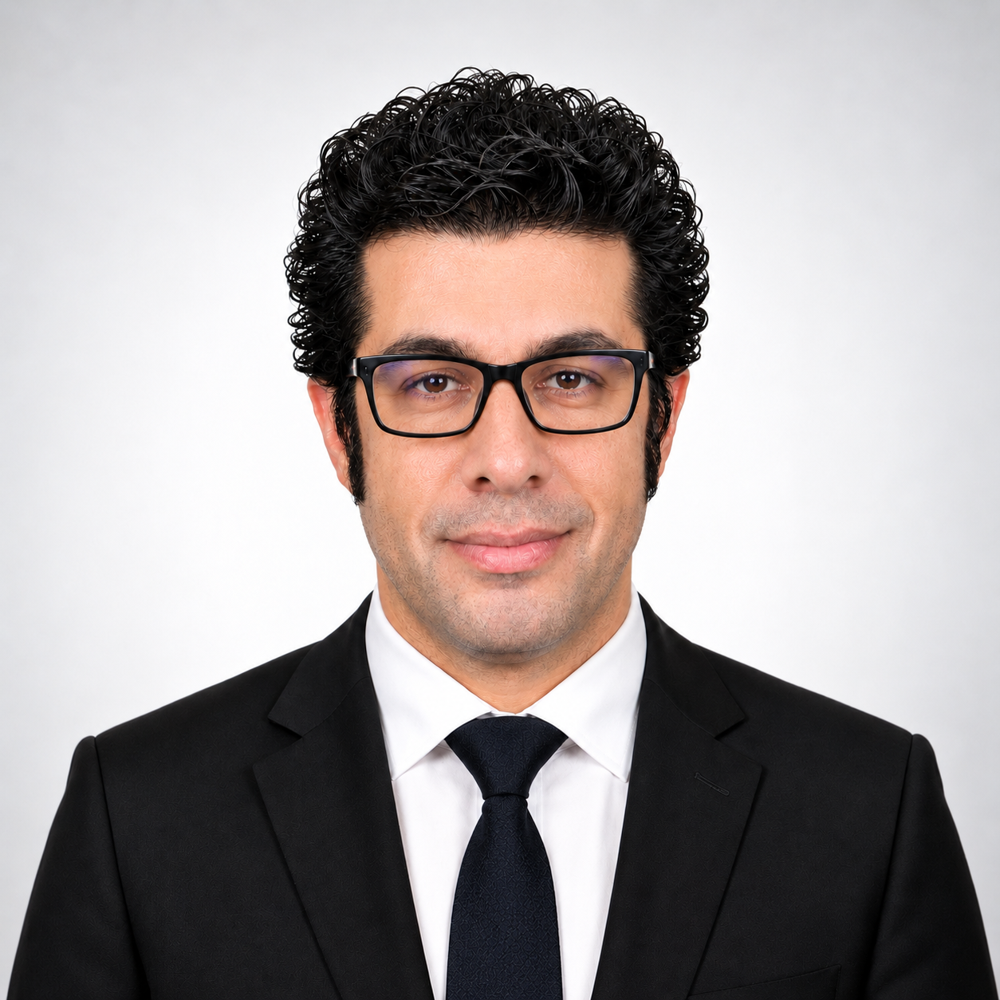

Introduction · Warsaw, Poland
Ph.D. Researcher in Electrical Engineering
I am Masoud Ardeshiri, a Ph.D. researcher in Electrical Engineering at Warsaw University of Technology, specializing in electric drives and power electronics. I received my B.Sc. and M.Sc. degrees in Electrical Engineering, with a specialization in Power Systems, from Islamic Azad University in Iran in 2013 and 2017, respectively. I am currently completing my Ph.D. within the discipline of Automation, Electronics, Electrical Engineering and Space Technologies, with graduation expected in 2027.
My research focuses on advanced control methods for synchronous and asynchronous electric drives, power electronic converters, battery energy-storage systems, and renewable-energy applications. I have experience developing energy-management strategies for wind-energy conversion systems, particularly for controlling and optimizing battery charging and discharging.
I am also experienced in the modelling, simulation, analysis, control, and parameter optimization of electrical and renewable-energy systems, including wind and photovoltaic generation systems. My technical software expertise includes MATLAB/Simulink, PLECS, and PSIM.